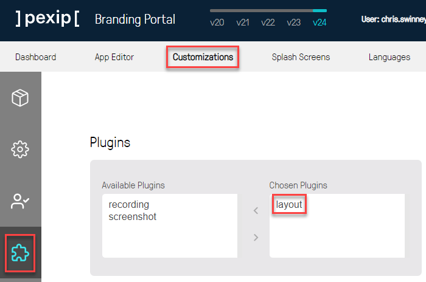
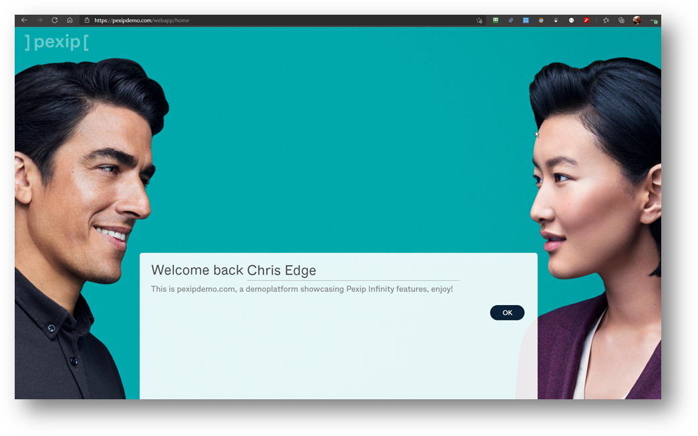
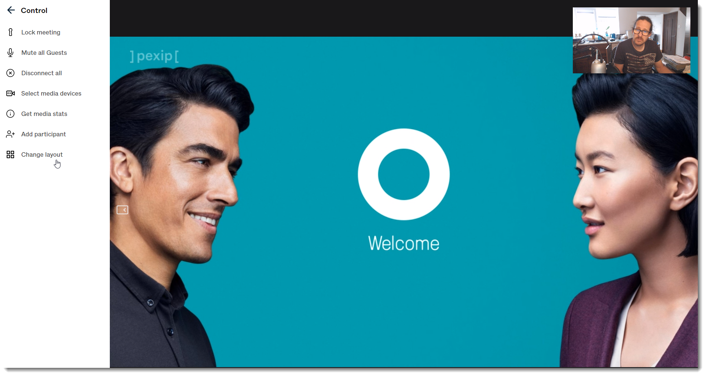

Suggested completion time: 20 minutes
No specific lab sheet section.
No step-by-step instructions for this section, see the click the "More Info" button above.
Sign up to the Branding Portal and create a unique brand and theme for your Infinity deployment (see the description guide for more information), then upload the resultant file via the Management Node. You will need to wait for the Pexip support staff to authorise this resquest, but if you tell your trainer, they can hurry this along.
You will need:
When you create your WebApp brand, make sure you add the "Layout" plugin from the "Customizations" menu. This will allow a host to change the layout of a service (such as a VMR) directly from the web client.

Grab a screenshot of the customised final user experience where they land on the branded WebApp (including a subtle corporate logo, for example:
A screenshot of the customised WebApp landing page:

Grab a screenshot of the customised final user experience when they enter a videoconferencing service, such as a VMR (including a subtle corporate logo), for example:
A screenshot of the customised in-conference theme (in this case, the Welcome screen) also showing the "Change Layout" plugin:
Make sure you test out the plugin functionality so you know what it does :).
